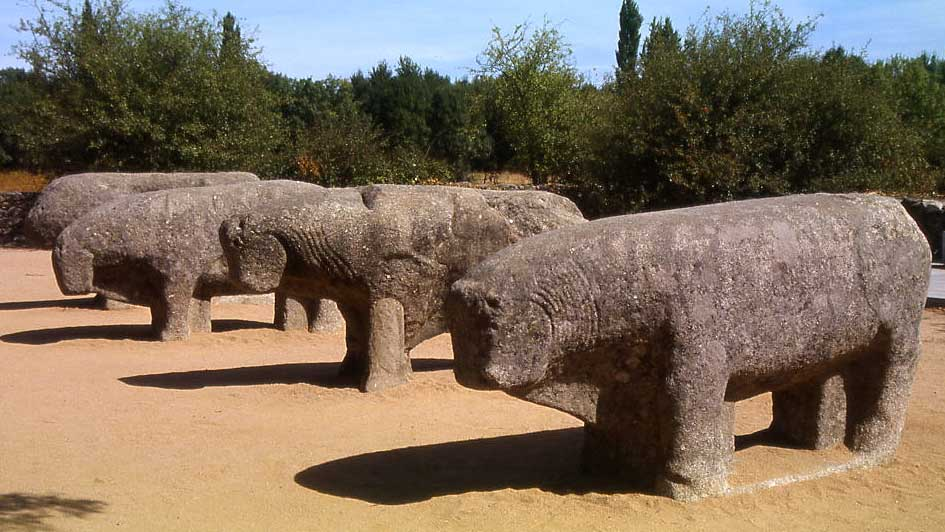
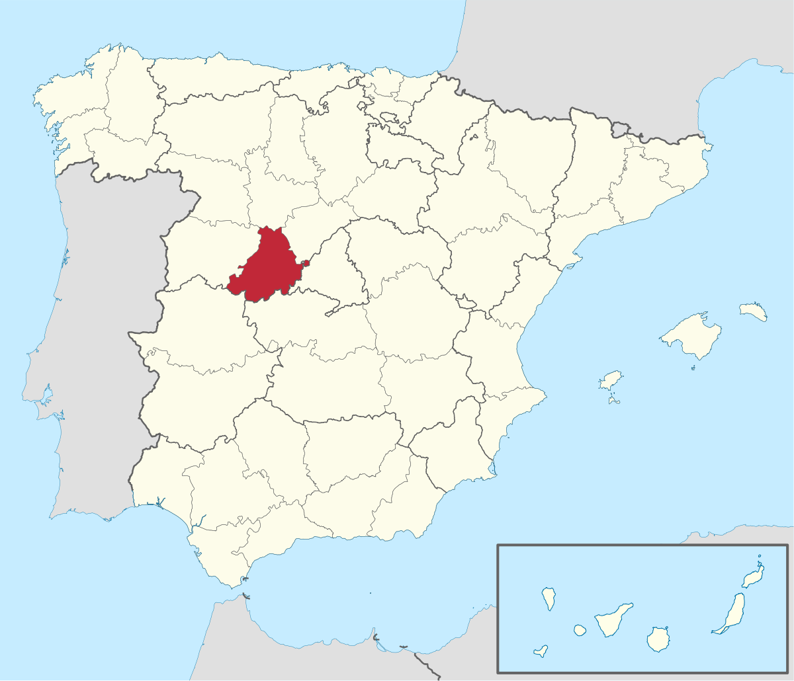
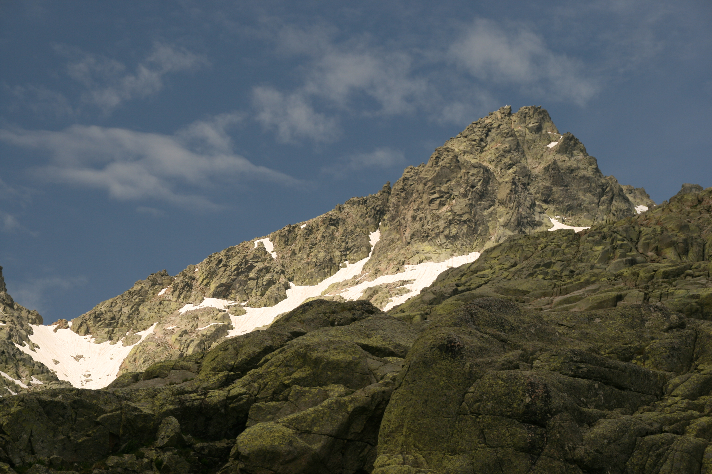
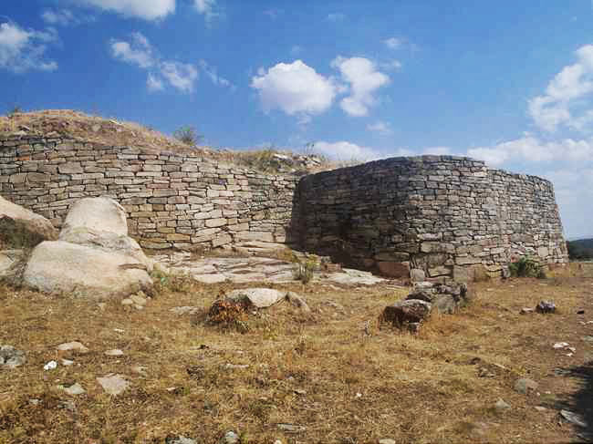
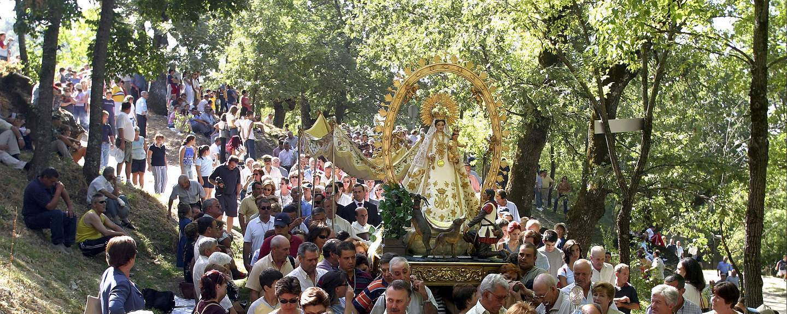
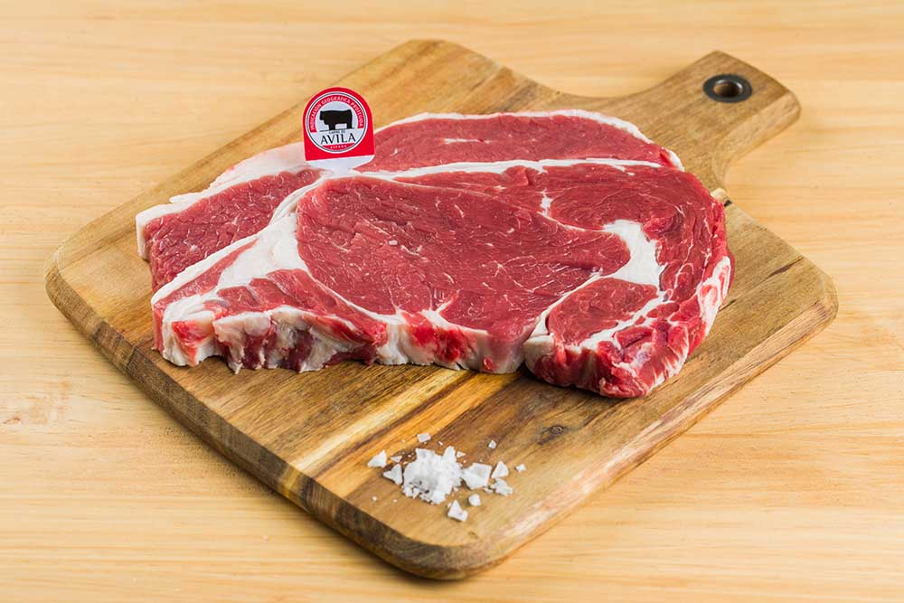
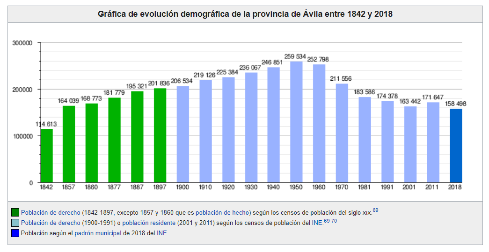

Ávila
Cultura
En la provincia existían en 2009 un total de 97 ítems catalogados como bienes de interés cultural, por debajo en este aspecto de otras provincias de la comunidad. Entre ellos se encuentran castillos y fortificaciones como las Murallas de Ávila, la Muralla de Madrigal de las Altas Torres, el Castillo-Palacio de Magalia en Las Navas del Marqués, el castillo de la Triste Condesa en Arenas de San Pedro o el castillo de Manqueospese; yacimientos arqueológicos como los castros de Ulaca, el Raso o el de la Mesa de Miranda; y edificios religiosos como la catedral del Salvador en Ávila, o las iglesias de Santa María la Mayor y San Martín en Arévalo. Los cascos históricos de Ávila y de las localidades de Arévalo, Piedrahíta, Guisando y Bonilla de la Sierra reciben también la calificación de bien de interés cultural con la categoría de «conjunto histórico».
En la provincia de Ávila existe un notable número de verracos de piedra. Los verracos son esculturas zoomorfas que suelen representar principalmente toros o cerdos erigidas en un área donde predominaba la cultura vetona —un pueblo prerromano de origen celta de la Edad del Hierro— que comprendía buena parte de la meseta norte y del valle del Tajo en España y también en Portugal.
Volver al inicio
Geografía
La provincia, que tiene una extensión de 8051,15 km², está situada al sur de la comunidad autónoma de Castilla y León. Limita con las provincias de Madrid, Toledo (Castilla-La Mancha) y Cáceres (Extremadura), aparte de con las provincias castellano y leonesas de Salamanca, Segovia y Valladolid también Ávila tiene 167 015 habitantes y 27,75 por kilómetro cuadrado.
Es propio de esta provincia su gran diversidad orográfica. Es la provincia de mayor altitud en promedio de España, con una altura media de 1131,8 m. Se distinguen tres grandes regiones:
La zona central donde se localizan el Valle de Amblés, el del Corneja y las zonas de montaña (sierra de Gredos, sierra de Béjar, sierra de Villafranca, La Serrota, sierra de la Paramera, sierra de Ávila o la sierra de Malagón) presenta ingentes formaciones graníticas que alcanzan su mayor altitud en el Pico del Moro Almanzor, que con 2592 metros es la cumbre culminante de la sierra de Gredos y la más elevada de todo el Sistema Central. Su clima de montaña se caracteriza por temperaturas muy bajas en el periodo invernal y veranos cortos y no muy calurosos. Son localidades importantes Ávila, Las Navas del Marqués, El Barco de Ávila y Piedrahíta.
La zona al sur del Sistema Central que comprende la parte abulense del valle del Tiétar está caracterizada por su menor altitud y un clima más cálido. En esta parte es fácil encontrar naranjos, olivos y palmeras en los principales pueblos. Entre los municipios más importantes de esta zona se encuentran Arenas de San Pedro, Candeleda, Sotillo de la Adrada, Mombeltrán y Lanzahíta.En el oriente de la provincia, en torno al valle del Alberche y a las estribaciones meridionales de la sierra de Guadarrama, se localizan municipios como El Tiemblo, Cebreros o El Hoyo de Pinares.
Volver al inicio
Historia
Antes de la llegada de los romanos el territorio actual de la provincia estaba principalmente habitada por los vetones. El límite nororiental del territorio vetón se ha fijado unos pocos kilómetros al norte de la capital provincial, en Cardeñosa. Los vacceos también ocuparon una parte del territorio actual de la provincia, en la actual comarca de La Moraña.
La mayor parte de la población se concentraba en la parte central de la provincia. Los pobladores prerromanos —los vetones— crearon en este periodo grandes poblados fortificados emplazados en elevaciones del terreno. , como El Raso, Las Cogotas, el Castro de la Mesa de Miranda, el Castro de la Era de los Moros o Ulaca. El castro de mayores dimensiones e importancia debió de ser el Castro de Ulaca. Una estimación sobre la población de este último ha arrojado un dato aproximado de unos 5900 habitantes.Los estudios de los ajuares de las tumbas encontradas apuntan a una sociedad vetona jerarquizada y piramidal, que estaría dominada por una élite militar, y en cuyo escalón más bajo no se descarta que hubiera podido haber quizás algunos esclavos. La base económica de los vetones fue la ganadería —en la que probablemente destacaría el ganado vacuno, con un papel secundario del ganado porcino, caprino y ovino—. Debido a que el territorio no disfrutaba de las mejores condiciones para el aprovechamiento agrícola, la agricultura quedó relegada a un segundo plano en cuanto a importancia; la caza se debió ver beneficiada por una buena calidad cinegética del territorio, mientras que la recolección de bellotas —complementada por las castañas o las nueces— debió de tener una notable importancia en la dieta de los vetones.
Para saber más acerca de la historia de la provinvia Volver al inicio
Localidades
La unidad administrativa básica en la que se divide la provincia son los municipios. Existen 248 en la actualidad. El municipio con más habitantes es la capital provincial. El resto de municipios no alcanzan la cifra de 10 000 ciudadanos empadronados. Es destacable un elevado número de ellos con poblaciones por debajo de los 500 habitantes. La extensión promedio del municipio en la provincia es de 32,46 km². Aparte de la capital provincial, entre las localidades destacan en cuanto a población Arévalo y Madrigal de las Altas Torres en la parte norte de la provincia (en la comarca tradicionalmente conocida como La Moraña). En el suroeste de la provincia sobresalen El Barco de Ávila, Piedrahíta y La Horcajada. En el más poblado sur de la provincia, en la vertiente meridional de la sierra de Gredos los municipios con más habitantes de la comarca del valle del Tiétar son los de Arenas de San Pedro, Candeleda, La Adrada, Piedralaves, Casavieja, Mombeltrán y El Arenal. En la parte este de la provincia, en zonas como el valle del Alberche y la Tierra de Pinares caracterizadas por una mayor cercanía a la capital del Estado, Madrid, destacan municipios como Las Navas del Marqués, El Tiemblo, Cebreros, Navaluenga, El Hoyo de Pinares, El Barraco o Burgohondo. De acuerdo al padrón municipal del INE los veinte municipios más poblados de la provincia en 2017 fueron:

Volver al inicio
Localización
La provincia, que tiene una extensión de 8051,15 km², está situada al sur de la comunidad autónoma de Castilla y León. Limita con las provincias de Madrid, Toledo (Castilla-La Mancha) y Cáceres (Extremadura), aparte de con las provincias castellano y leonesas de Salamanca, Segovia y Valladolid también Ávila tiene 167 015 habitantes y 27,75 por kilómetro cuadrado.

Volver al inicio
Naturaleza
Es propio de esta provincia su gran diversidad orográfica. Es la provincia de mayor altitud en promedio de España, con una altura media de 1131,8 m. Se distinguen tres grandes regiones:
La zona norte, continuación de la Meseta Norte y del valle del Duero está caracterizada por un paisaje llano con suelos formados por materiales sedimentarios. Comprende la comarca de La Moraña. Los principales municipios son Arévalo y Madrigal de las Altas Torres.
La zona central donde se localizan el Valle de Amblés, el del Corneja y las zonas de montaña (sierra de Gredos, sierra de Béjar, sierra de Villafranca, La Serrota, sierra de la Paramera, sierra de Ávila o la sierra de Malagón) presenta ingentes formaciones graníticas que alcanzan su mayor altitud en el Pico del Moro Almanzor, que con 2592 metros es la cumbre culminante de la sierra de Gredos y la más elevada de todo el Sistema Central. Su clima de montaña se caracteriza por temperaturas muy bajas en el periodo invernal y veranos cortos y no muy calurosos. Son localidades importantes Ávila, Las Navas del Marqués, El Barco de Ávila y Piedrahíta.
La zona al sur del Sistema Central que comprende la parte abulense del valle del Tiétar está caracterizada por su menor altitud y un clima más cálido. En esta parte es fácil encontrar naranjos, olivos y palmeras en los principales pueblos. Entre los municipios más importantes de esta zona se encuentran Arenas de San Pedro, Candeleda, Sotillo de la Adrada, Mombeltrán y Lanzahíta.
En el oriente de la provincia, en torno al valle del Alberche y a las estribaciones meridionales de la sierra de Guadarrama, se localizan municipios como El Tiemblo, Cebreros o El Hoyo de Pinares.
La diversidad orográfica antes indicada hace de Ávila una de las provincias interiores españolas más ricas en ecosistemas y por tanto en biodiversidad. Así se pueden distinguir cuatro tipos de ecosistemas principales:
- Llanura cerealística
- Encinar
- Ecosistema Mediterráneo
- Alta montaña
Volver al inicio
Tradiciones
En Ávila, al igual que en otras muchas provincias o lugares de España, las fiestas también tienen sus raíces en la tradición y están relacionadas casi siempre con los habituales ejes temáticos: lo religioso y lo profano.
La Semana Santa es, sin duda, una de las fiestas más interesantes de España y también de Ávila. Su origen se encuentra en el Monasterio de San Francisco, cuna de los desfiles procesionales de la Semana Santa abulense, en los que hoy participan numerosas cofradías y hermandades.

Romería de Nuestra Señora de Chilla. Se celebra en el pueblo de Candeleda el segundo domingo de septiembre. Es una celebración de origen medieval que se inició en el paraje de Chilla, donde se encuentra la ermita donde se habría aparecido la Virgen a un pastorcillo a principios del siglo XIV para resucitar a una de sus cabras. El domingo se celebra una comida-merienda en el entorno de la ermita y durante los días de celebración el pueblo acoge encierros y novilladas.
Volver al inicio
Otros
Gastronomía
Entre sus platos más emblemáticos se encuentran las patatas revolconas, la sopa de ajo castellana, las judías del Barco de Ávila guisadas, el chuletón de Ávila, el cochinillo asado (denominado también lechón asado), el cocido, la morcilla de cebolla, los torreznos, los huevos rotos, la ternera abulense, el hornazo, la gallina en pepitoria, las manos de cerdo, la sopa de pan, los huevos al plato, el conejo a la cazadora (asado), la bolla de chicharrones y las famosas yemas de Ávila también conocidas como yemas de Santa Teresa.
Demografía
De los 158 498 habitantes empadronados en 2018 en la provincia, aproximadamente un 36% vive en la capital, la ciudad de Ávila. La densidad de población de la provincia, de solamente 19,69 hab./km², es muy inferior a la del promedio del estado, 92,91 hab./km².
Volver al inicio